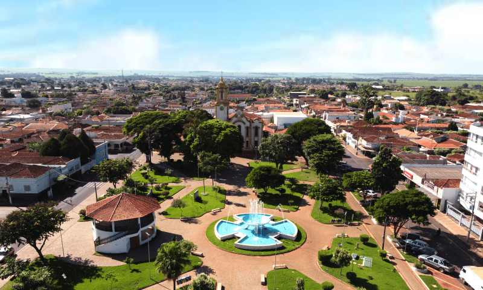

De Pátria para Pátria
Uma jornada épica do Kentucky ao Burundi pelo País de Gales e Ucrânia

Conheça um pouco mais sobre a localização dos seus amigos virtuais
Cada pessoa é um artista livre, chamado a transformar as condições, pensamentos e estruturas que moldam nossas vidas.
A cidade de Practicum reuniu profissionais de diversos cantos do mundo. Hoje, a Galeria de Arte Practicum tem o orgulho de apresentar histórias e fotos de algumas das pessoas que dedicam seu tempo e esforço para fazer com que os futuros profissionais de tecnologia desta cidade se sintam em casa. Cada um de nós tem uma história única sobre o lugar de onde viemos. Sinta-se à vontade para adicionar sua própria história e uma obra de arte visual dedicada à sua cidade natal à nossa coleção. Não importa de onde você é, estamos felizes por você ser nosso vizinho.


Kiev, Ucrânia

-
Kyev (ou Kiev), capital da Ucrânia, é uma grande cidade localizada às margens do rio Dnipro. É claro que ninguém em sã consciência nadaria no rio, a menos que tenha crescido lá, e nesse caso provavelmente já tentou em algum momento. Os verões são quentes aqui e os invernos são frios, mas o outono e a primavera são absolutamente incríveis.
A cidade em si é uma mistura de arquitetura pré-revolução, pós-guerra e soviética, toda ela salpicada de varandas modificadas. Se estiver na margem direita do Dnipro, a paisagem é difícil de percorrer para quem anda de bicicleta e quem usa salto. A margem esquerda é considerada muito menos interessante e prestigiosa, mesmo por pessoas que vivem na periferia da margem direita.
- Compre esta obra de arte como NFT
- Criccieth, País de Gales

-
A ruína medieval do Castelo de Cricieth tem vista para a cidade abaixo de uma rocha que se projeta para o mar. Acredita-se que tenha sido construído por Llewelyn, o Grande, no século XIII. Cerca de 900 anos depois, a auto-intitulada *Pérola de Gales nas margens de Snowdonia* tornou-se um destino turístico popular durante os meses de verão.
A uma curta caminhada da estrada do castelo, você pode desfrutar do melhor sorvete do mundo no Cadwalader's, cujo ingrediente secreto, segundo rumores, são algas marinhas de origem local. Outra reivindicação à fama é o fato de que Criccieth ganhou o prêmio *Wales in Bloom* por cinco anos consecutivos por suas espetaculares exibições florais pela cidade. Foi também a casa de David Lloyd George, o único galês a ocupar o cargo de primeiro-ministro do Reino Unido.
- Compre esta obra de arte como NFT
- Muramvya, Burundi

-
Muramvya é uma das 18 províncias de Burundi. Na era do reino, Muramvya era a capital real e em 2007, por causa de sua paisagem cultural e natural, foi adicionada à Lista Provisória do Patrimônio Mundial da UNESCO. Está localizada no centro de Burundi, entre as capitais políticas e econômicas do país.
O clima é bastante frio à noite, mas durante o dia, você pensaria que está no céu. A 2.665 metros (8.743 pés) acima do nível do mar, o Monte Teza é um dos lugares mais frios da província. Mas essa brisa fresca permite uma das maiores plantações de chá e café do país, que representam a maior parte das exportações do Burundi.
O Parque Nacional de Kibira, uma das maiores reservas de vida selvagem para macacos, se sobrepõe a quatro províncias, incluindo Muramvya. Este Parque Nacional encontra-se no ápice das belas montanhas do Congo-Nile Divide, variando entre 1.550 e 2.660 metros de altitude. Está repleta de uma bela vegetação e fonte para os vários rios e riachos que fornecem água em todo o país.
- Compre esta obra de arte como NFT
- Guará, Brasil
- 
-
Guará, uma encantadora cidade no interior de São Paulo, brilha com seu clima ameno e paisagem deslumbrante. Aninhada a aproximadamente 850 metros acima do nível do mar, a cidade oferece noites agradáveis e dias ensolarados, proporcionando uma atmosfera acolhedora ao longo do ano. Rodeada por colinas suaves e áreas verdes, Guará é um refúgio para amantes da natureza, com trilhas pitorescas e vistas deslumbrantes. Sua rica produção agrícola abastece mercados locais, oferecendo uma experiência culinária única. Além disso, a cidade serve como ponto de partida para explorar o Parque Estadual de Vassununga, uma reserva natural com uma rica diversidade de vida selvagem e vegetação.
Guará é uma fusão harmoniosa de beleza natural, herança cultural e tranquilidade. Com edifícios históricos e igrejas centenárias que contam a história da região, a cidade convida os visitantes a mergulhar em sua rica história. Seja para apreciar a natureza, explorar sua herança cultural ou desfrutar de seu clima agradável, Guará é um destino imperdível para quem busca uma experiência autêntica no interior de São Paulo.
- Compre esta obra de arte como NFT

Visite-Nos
Durante todo o ano Galeria de Arte Practicum 404, Avenida Tim Berners-Lee.
Comprar bilhetes